Alex Valdivia, building things to see how they work
I'm a mathematical engineer working in growth analytics. In my free time I design parts in Fusion 360, print them, break them, and print them again. This is the log so far.
A fully 3D-printed, functioning bike
work in progress: gears instead of a chain
Drag to rotate, scroll or pinch to zoom.
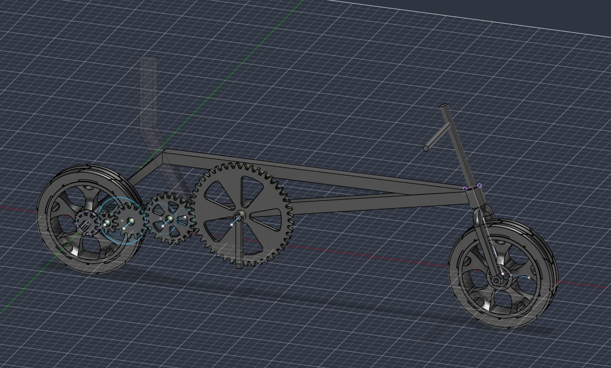
A bike wheel, printed
wheel works, the rest of the bike is nextThe wheel is the first part of the bike that's fully printed and working: the rim, a hub with its axle, and a separate tire. Slide the cut to see the wheel in cross-section.
Drag to rotate, scroll or pinch to zoom.
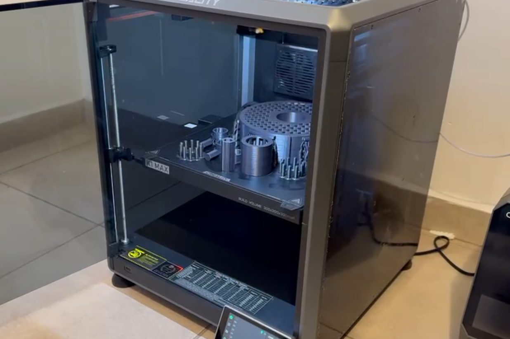
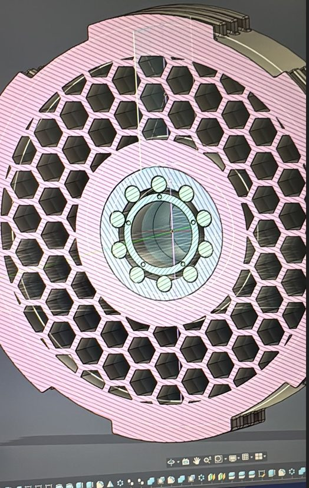
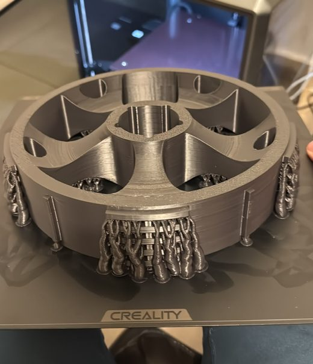
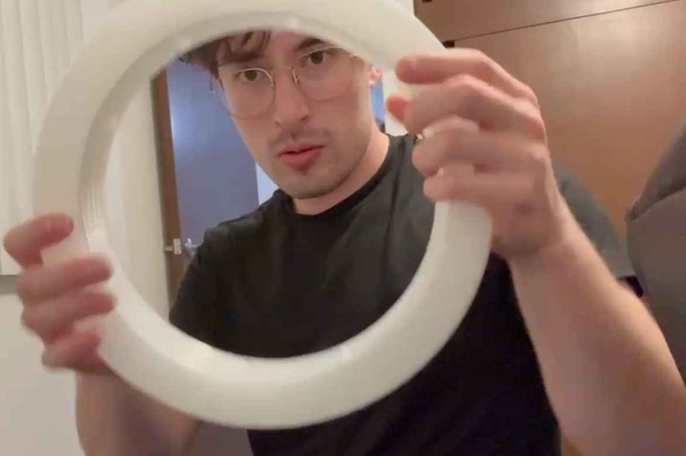
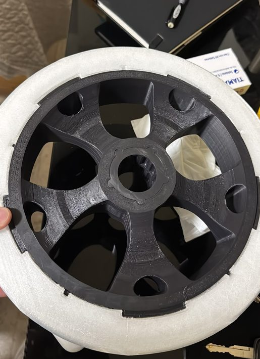
The bearing inside
Every bearing on the bike comes from one parametric component I designed in Fusion 360. I can change its dimensions and reuse it anywhere, from the hubs to the crank.
Push the slider all the way right to see the whole bearing.
A tiny hand that signals my turns
prototype working, refining it nowWhen I ride, I want people to know where I'm turning. So I'm building a small 3D-printed hand that points left or right, with a blinking LED.
Instead of just buying a ULN2003 stepper driver, I rebuilt one from scratch. That's how I learned to read electronic diagrams and what resistors, diodes, and capacitors actually do. Mine came out much bigger than the store-bought board, but it works, and an Arduino controls the whole thing.
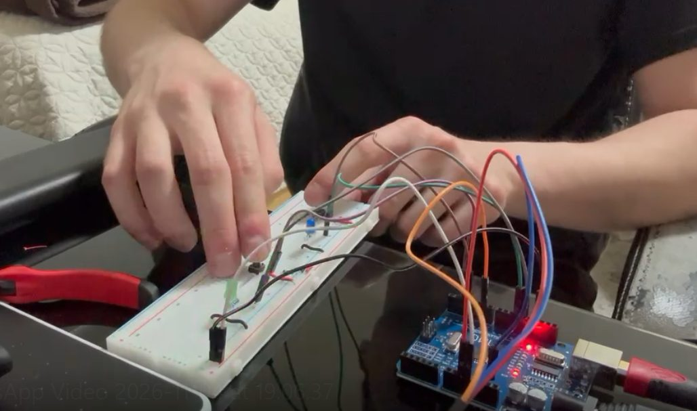
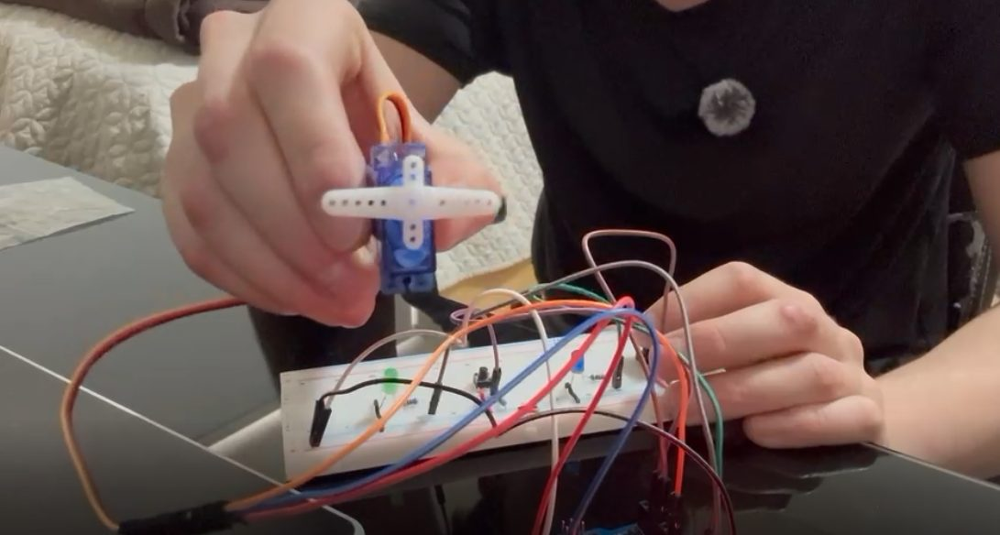
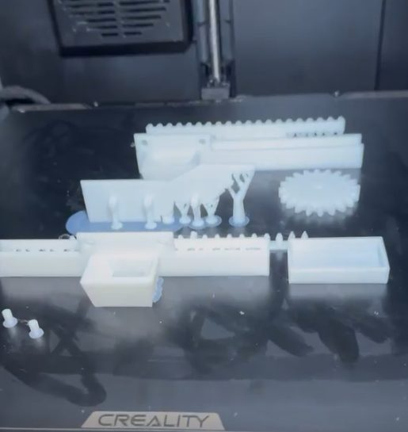
Where it started: a broken chair wheel
fixed, and still rollingOne of my chair's wheels broke, so instead of buying a new one I decided to print it. That meant designing my first bearing.
It took several attempts. Some versions broke, so each round I improved the bearing design and learned how to make the parts stronger, until one finally held. That's where the bearing in the bike comes from.
all the parts, laid out the way they print
Drag to rotate, scroll or pinch to zoom.
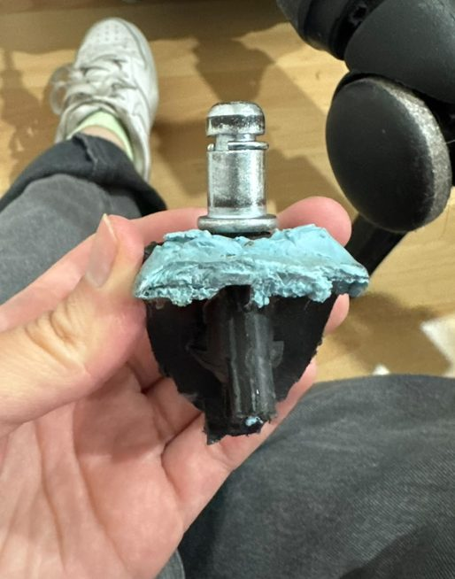
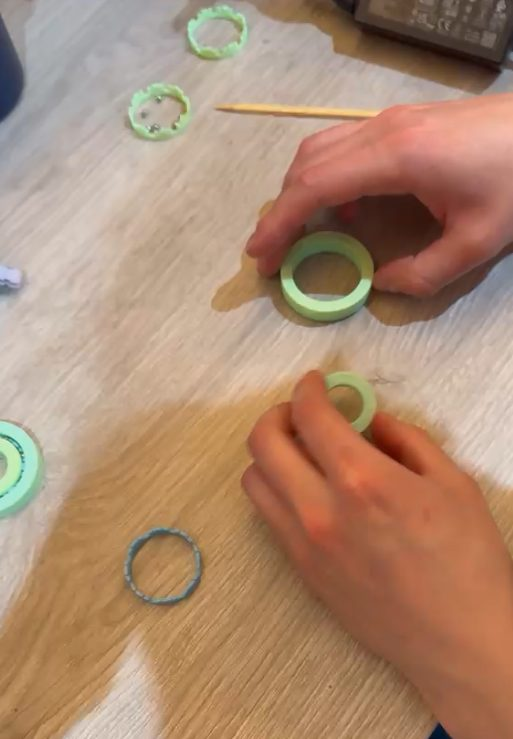
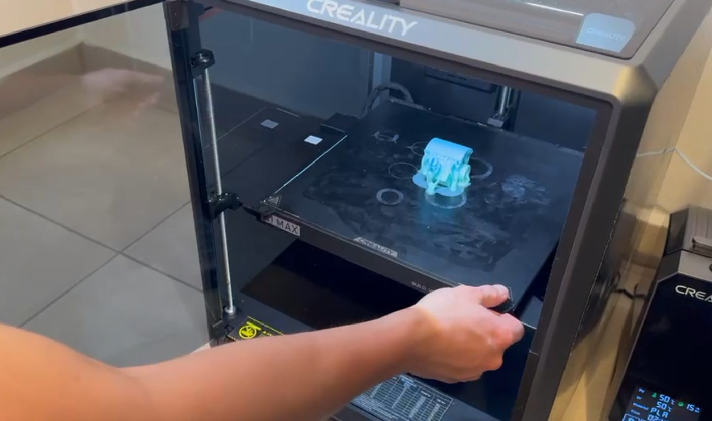
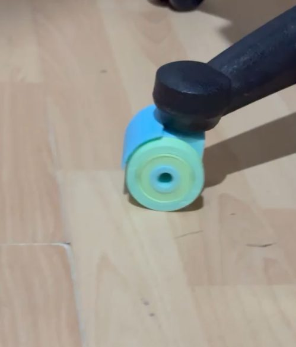
Up next
What I build at work
Klar, growth teamAt Klar, a fintech in Mexico City, I run the reengagement program for credit activation. When incentives stopped moving the number, I asked users why they hadn't activated, and 40% said they had a technical issue. So I built this:
It's in soft launch with 9.5% incrementality, on track for about 2,000 extra activations a month. Along the way I connected Customer.io, Twilio, and Meta through their APIs so the whole growth team can see what each campaign costs, every day.